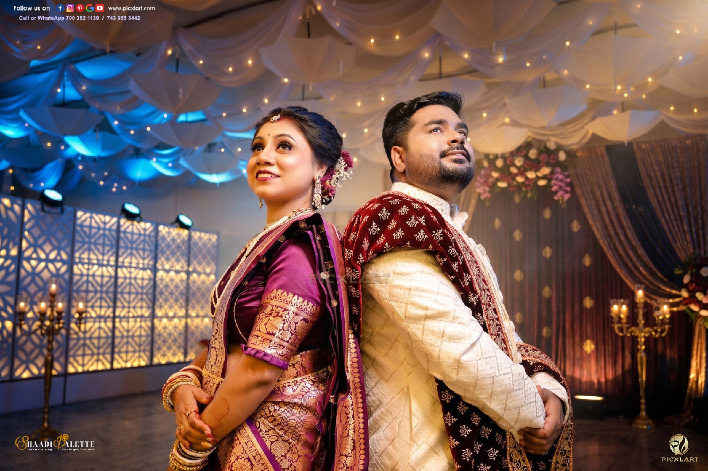
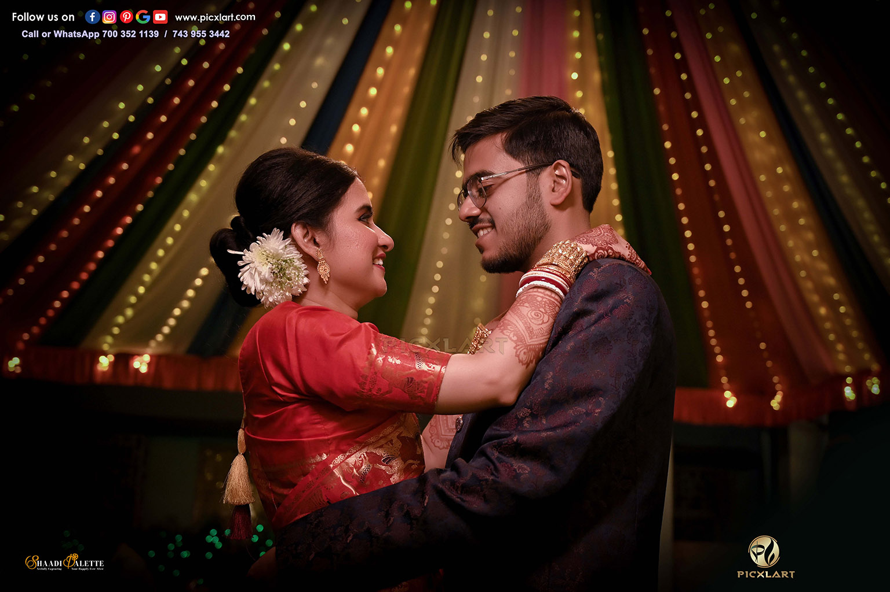
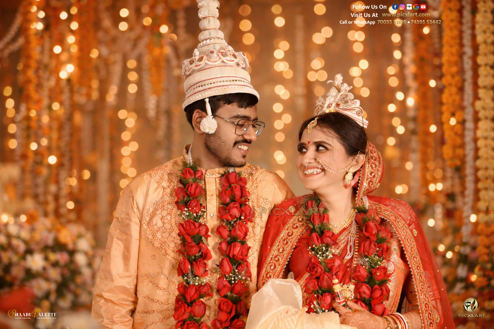
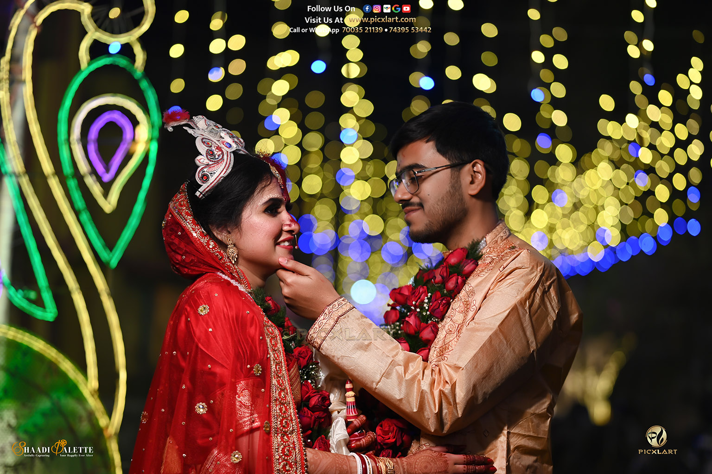

Your wedding is one of the most meaningful chapters of your life, and choosing the right visual storyteller ensures those fleeting emotions live on forever. With hundreds of studios claiming to be the best wedding photographer in Kolkata or across West Bengal, making the right choice can feel overwhelming. At Picxlart Photography & Events Co. (popularly known as Picxlart), we believe transparency builds trust.
Whether you are searching for the top wedding photographer in Serampore, scouting the best wedding photographer in Hooghly District, or looking for the best wedding photographer in Howrah, asking the right questions before signing a contract is essential. Here is our curated checklist of 30 essential queries every couple should ask before booking their wedding photography team in 2026.

Section 1: Background, Experience & Reliability
1. How long have you been capturing weddings professionally?
Experience brings calm under pressure. A seasoned team like Picxlart, active since 2016, knows how to anticipate emotional rituals and handle unpredictable schedules effortlessly.
2. How many real weddings has your team photographed so far?
The number of real weddings covered reflects practical adaptability. Studios with hundreds of completed events across Kolkata, Hooghly, and Howrah are prepared for every cultural nuance.
3. Can we view complete full-wedding galleries, not just social media highlights?
Instagram reels only show the best 15 seconds. Always ask to inspect full-day wedding albums and complete event galleries to evaluate consistency from morning rituals to late-night reception moments.
4. What primary photography and cinematography style do you specialize in?
Every studio has a signature aesthetic—candid storytelling, editorial portraits, traditional documentation, or cinematic films. Ensure their visual language matches your personal taste.
5. Have you previously worked at our wedding venue?
Familiarity with banquet halls, heritage rajbaris, or outdoor lawns in Kolkata, Serampore, or Howrah helps photographers plan lighting setups and portrait angles well in advance.
6. How do you manage challenging low-light venues or harsh midday sunlight?
Indian weddings involve everything from bright outdoor Gaye Holud ceremonies to dimly lit Subho Drishti rituals. Professional studios rely on high-speed prime lenses and controlled off-camera lighting to deliver crisp results in any environment.
7. Do you carry complete backup cameras, lenses, and lighting gear?
Technical emergencies can happen anytime. Always verify that your photographer carries dual-slot camera bodies, spare lenses, extra batteries, and backup flashes so not a single ritual is missed.
8. How do you plan and manage the wedding-day timeline?
A structured pre-wedding consultation helps map out couple portraits, family group shots, and bridal entry timings without delaying your rituals.
9. Will the lead photographer personally shoot our wedding?
Large agencies sometimes outsource events to freelancers. Confirm whether the core senior team you meet during booking will actually be present behind the lens on your big day.
10. Have you collaborated with our wedding planner, decorator, or makeup artist before?
Smooth coordination between your makeup artist, decorator, and photography crew ensures you get uninterrupted time for portraits while keeping the event stress-free.

Section 2: Artistic Style, Storytelling & Comfort
11. How would you describe your signature visual storytelling approach?
Ask how they balance natural, unscripted moments with timeless posed portraits, as well as their approach to color grading and skin-tone naturalness.
12. Are there specific visual themes or details you focus on during weddings?
From intricate bridal jewelry and heirloom sarees to emotional tears during Bidaai, great photographers weave small details into a cohesive narrative.
13. What inspires your creative direction during a live wedding?
Every couple has a distinct chemistry. At Picxlart, we draw inspiration from your personalities, family bonds, and the architectural charm of your venue.
14. How do you keep each wedding film and album unique rather than repetitive?
Cookie-cutter templates make every wedding look identical. Ask how the team customizes music selection, pacing, and framing to reflect your unique love story.
15. How do you capture genuine emotions without interrupting sacred rituals?
Respecting priests, elders, and traditional ceremonies is vital. Experienced candid photographers use telephoto lenses to capture raw laughter and tears discreetly from a distance.
16. How do you help camera-shy couples feel relaxed during portrait sessions?
Most couples are not professional models. A friendly, patient photographer guides you with simple prompts and natural movement so your smiles look effortless.
17. How do you balance traditional family group photos with artistic candid shots?
While candid frames capture emotion, classic group photographs with parents and relatives remain priceless family treasures. Your team should excel at both.
18. Do you offer drone cinematography and aerial coverage?
Aerial shots add grand scale to venue architecture, Barat processions, and outdoor pre-wedding shoots—provided venue permissions allow it.

Section 3: Packages, Pricing, Deliverables & Policies
19. What is the starting investment for your wedding photography and film packages?
Understanding clear pricing tiers early helps you align your expectations with your overall wedding budget without last-minute surprises.
20. What exact deliverables are included in our chosen package?
Check the exact breakdown: number of team members (candid, traditional, cinematographers), edited high-resolution photos, cinematic teaser, full-length wedding film, and RAW data policies.
21. Can we customize a package tailored specifically to our wedding events?
Every wedding is different—some span three days across both bride and groom sides, while others are intimate single-day celebrations. Look for flexible customization.
22. Do you offer pre-wedding or engagement shoots within your packages?
A pre-wedding shoot is the best ice-breaker to build comfort with your photographer before the main wedding day arrives.
23. How many hours of coverage are included per day?
Bengali weddings often stretch late into the night for Subho Drishti and Sindoor Daan. Clarify daily coverage hours and any overtime terms beforehand.
24. Are there any additional charges for travel, accommodation, or outstation venues?
If your wedding takes place outside Kolkata, Serampore, or Howrah, confirm travel and lodging logistics in writing during the booking stage.
25. What kind of wedding photobooks and albums do you provide?
Digital files fade into hard drives, whereas handcrafted archival albums last generations. At Picxlart, we craft bespoke, high-grade photobooks designed to preserve your memories in timeless elegance.
26. What is your estimated delivery timeline for photos, teasers, and full films?
Ask for realistic delivery schedules for sneak-peek social media photos, complete edited galleries, cinematic wedding films, and printed albums.
27. How are our photos backed up and stored safely after the wedding?
Data security is non-negotiable. Confirm that the studio maintains multi-drive backups until all final deliverables are safely handed over to you.
28. What is your booking deposit and milestone payment structure?
Typically, studios require an advance retainer to lock your wedding dates, followed by scheduled installments before the event and upon final delivery.
29. Do you offer seasonal privileges or off-season booking benefits?
Booking early for 2026–2027 wedding dates or non-peak calendar months can sometimes unlock complimentary add-ons or customized value packages.
30. What is your rescheduling, cancellation, and refund policy?
Life can bring unexpected changes. Ensure you review transparent terms regarding date postponements or force majeure situations before finalizing your agreement.

Choosing your wedding photographer is ultimately about trust, artistic alignment, and human connection. Take your time to review portfolios, have an open conversation with the team, and select storytellers who genuinely care about preserving your legacy.
Planning Your 2026–2027 Wedding? Let’s Talk!
Have questions about packages, dates, or custom wedding coverage in Kolkata, Serampore, Hooghly, or Howrah? Connect directly with the Picxlart team today.
Chat With Picxlart